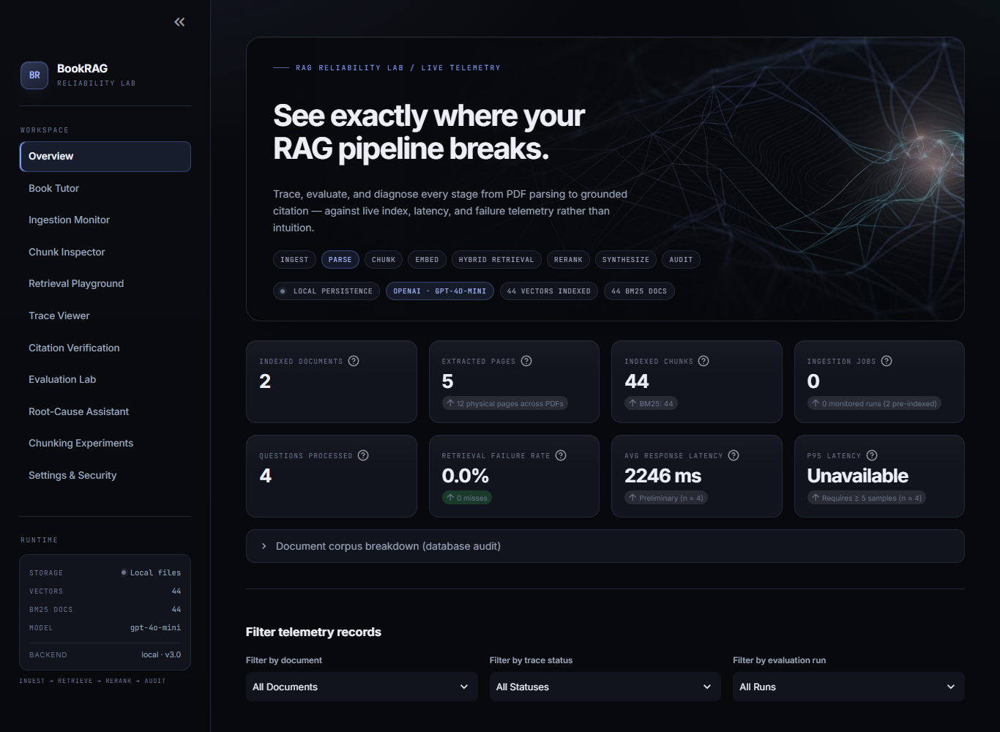
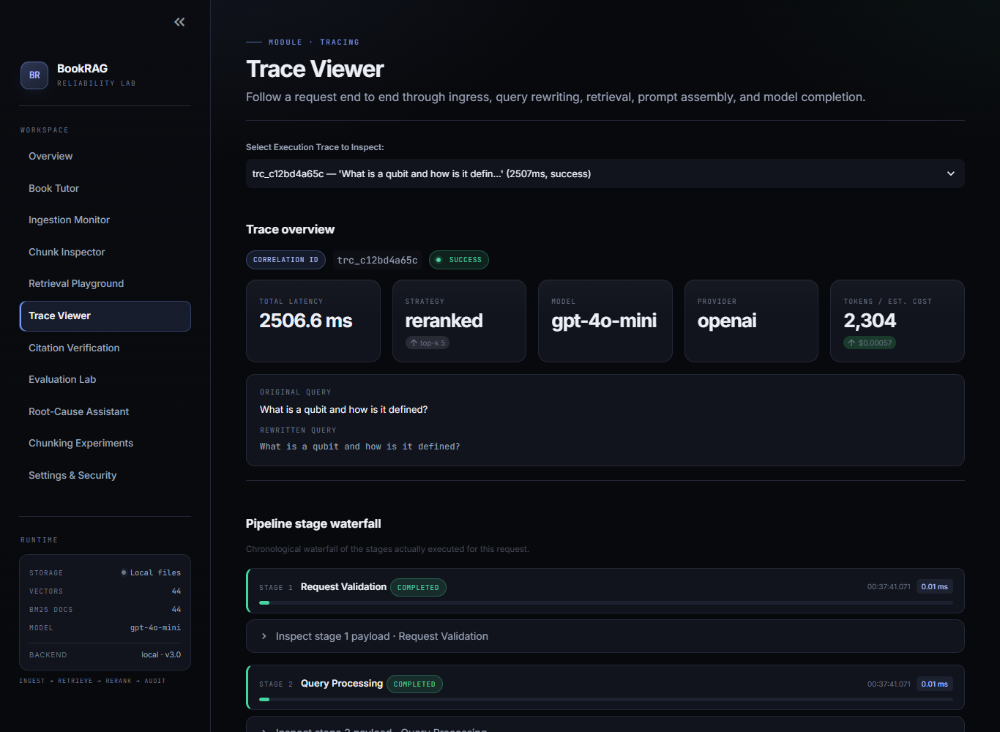
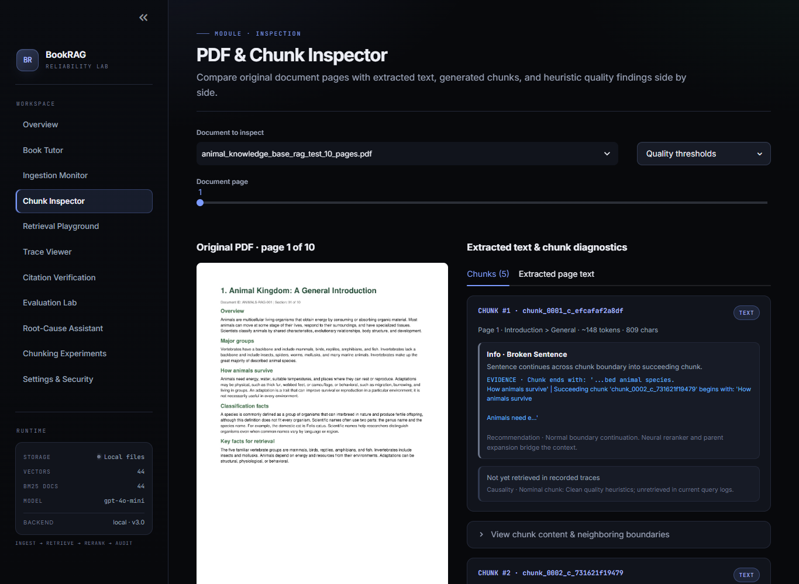
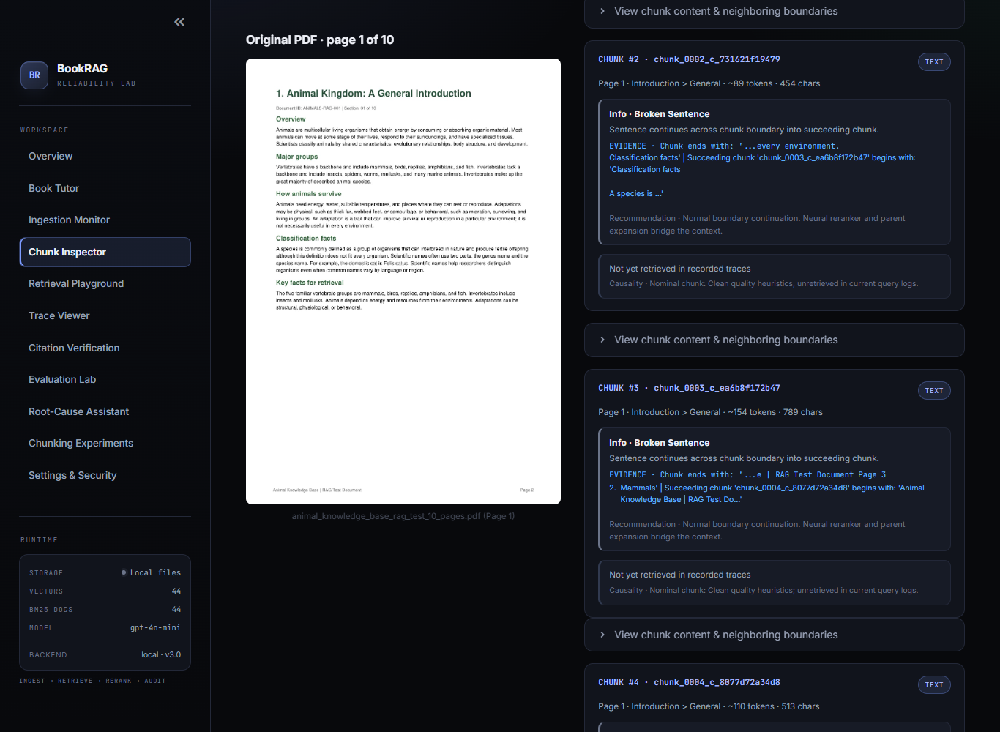

RAG Engineering Platform
See exactly where your RAG pipeline breaks.
BookRAG Reliability Lab is a production-oriented debugging, evaluation, and observability platform that traces every request from PDF ingestion through hybrid retrieval and reranking to citation verification — with reproducible benchmarks and evidence-based failure diagnosis.
- Indexed chunks
- 910
- Indexed pages
- 104
- Benchmark questions
- 22
- Reliability tests
- 54

Instrumented end to end
One pipeline, ten instrumented stages
Every stage writes real telemetry: microsecond timestamps, durations, payloads, and success or failure states. No simulated records — if a metric cannot be derived from an authoritative store, the dashboard says so.
-
Ingest
- 01PDF parsingHeading hierarchy, block classification
- 02ChunkingSentence-safe splitter, quality heuristics
- 03EmbeddingBAAI/bge-small-en-v1.5
- 04IndexingChromaDB + BM25 in parallel
-
Retrieve
- 05Hybrid searchDense vectors + Okapi BM25, RRF fusion
- 06Neural rerankbge-reranker cross-encoder
- 07Context buildBounded prompt, source delimiters
-
Audit
- 08SynthesisLLM or deterministic fallback tutor
- 09Citation checkClaim-by-claim verification
- 10EvaluationRecall@k, MRR, groundedness
Trace waterfall
Each request produces a Gantt-style waterfall with per-stage latency and expandable payload inspectors.
- Request validationverified
- Query processingverified
- Candidate retrievalverified
- Neural rerankingskippable
- Context constructionverified
- LLM generationverified
- Citation verificationverified
- Response deliveryverified
Reranking is explicitly recorded as Skipped with its bypass rationale when the
strategy is vector_only, bm25_only, or hybrid_rrf — the trace
reflects what actually ran.
The console
Eleven modules, one debugging surface
A dark-mode developer console where pre-generation retrieval debugging, prompt tracing, and failure investigation live side by side.
- A
Observability Dashboard
Real-time production metrics: chunks, pages, failure rates, and honest latency percentiles that refuse to masquerade on small samples.
- B
Ingestion Diagnostics
Stage tracking with duration timers and heuristic detection of unreadable or scanned pages.
- C
PDF & Chunk Inspector
Two-panel ground truth: original page raster beside extracted text, chunk quality flags, and boundary neighbors.
- D
Retrieval Playground
Test vector, BM25, hybrid RRF, and reranked strategies pre-generation, with candidate diffs.
- E
Prompt & LLM Trace Viewer
Waterfall tracer with correlation IDs, per-stage latency, secret masking, and cost estimation.
- F
Citation Verification
Deterministic auditing that checks whether cited chapter and page references actually exist in retrieved context.
- G
Evaluation Lab
Repeatable benchmarks computing Recall@k, Precision@k, MRR, groundedness, and CSV dataset import/export.
- H
Root-Cause Assistant
A 10-stage failure classification engine that outputs evidence, likely causes, fixes, and confirmation tests.
- I
Chunking Workbench
Isolated, non-destructive sandboxes comparing chunking strategies and top-k retrieval matrices.
- S
Security & Threat Model
Masked key management, prompt-injection boundaries, and storage backend health.
Measurement first
Claims backed by recorded runs
No improvement is reported unless supported by data. The benchmark below compares a reranked strategy against a pure vector baseline on the same 22-question dataset.
Benchmark · quantum_bench v2.0
eval_3df8c3b8 vs eval_7bcda3d6 · k = 5
| Metric | vector_only | reranked | Verdict |
|---|---|---|---|
| Recall@5 | 100.0% | 100.0% | neutral |
| Precision@5 | 20.0% | 20.0% | neutral |
| MRR | 1.000 | 1.000 | neutral |
| Answer correctness | 55.0% | 55.0% | neutral |
| Citation accuracy | 100.0% | 100.0% | neutral |
| Groundedness | 100.0% | 100.0% | neutral |
| Abstention quality | 100.0% | 100.0% | neutral |
| Average latency | 63.7 ms | 14 470.3 ms | slower |
Identical hit-rate on this compact benchmark, but the CPU cross-encoder adds +14.4 s
per query — so vector_only or hybrid_rrf wins in low-latency CPU
deployments. The comparator reports the cost honestly.



Telemetry persistence
Local files by default, Supabase when you want it
All traces, evaluation runs, and investigations persist as JSON under
data/observability/. Add a Supabase URL and service-role key and the
platform switches automatically — the key stays server-side and never reaches the browser.
-
Explicit degradation
If a remote read or write fails, the adapter logs the error, marks storage degraded, and serves that operation from local files. Failures are loud, never silent.
-
Backfill when healthy
Records written while offline are pushed to Supabase in one pass once the connection recovers — and the backfill fails loudly if any upsert is rejected.
-
One table, JSONB payloads
Traces, benchmarks, experiments, and investigations share a single
observability_recordstable keyed by kind and record ID.
Get it running
From clone to console in minutes
Python 3.10+, a requirements.txt install, and one command. No API key
required — without one, the platform runs a deterministic offline tutor so every
workflow operates without external costs.
Install & launch
# from the project root
pip install -r requirements.txt
cp .env.example .env # optional — offline fallback runs without it
streamlit run app/streamlit_app.py
# → http://localhost:8501Verify reliability
# 54 tests, local backend, temp telemetry dir
python -m pytest tests/ -q
# command-line Hit-Rate@5 benchmark
python eval.pyOptional: Supabase telemetry
# 1) run scripts/supabase_schema.sql in the SQL editor
# 2) add to .env
SUPABASE_URL=https://your-project.supabase.co
SUPABASE_KEY=your_service_role_key_here
STORAGE_BACKEND=auto